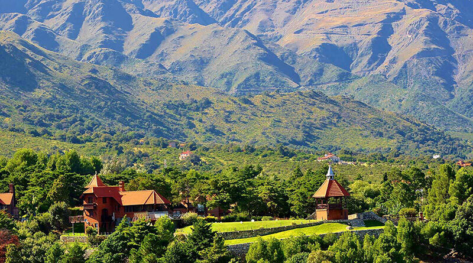
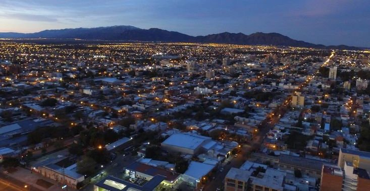
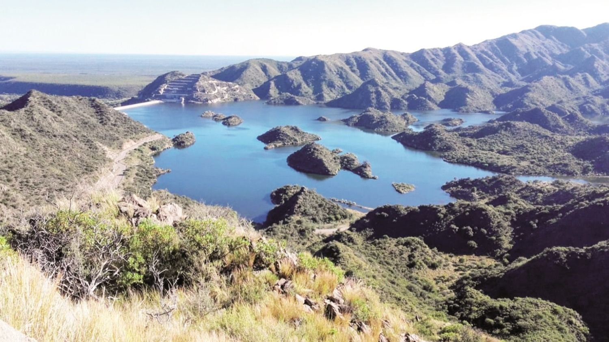
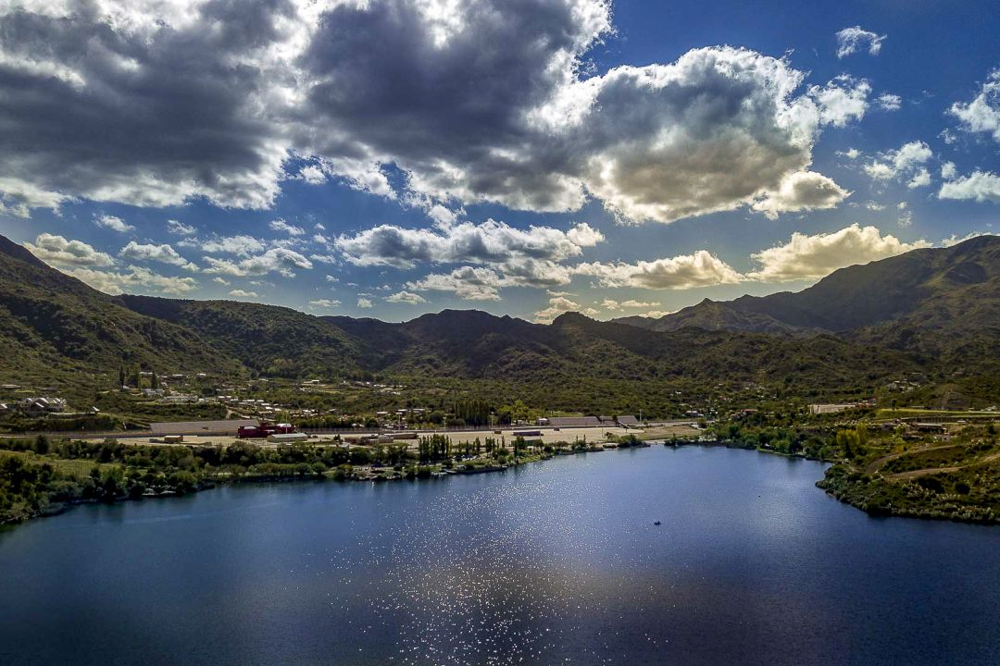
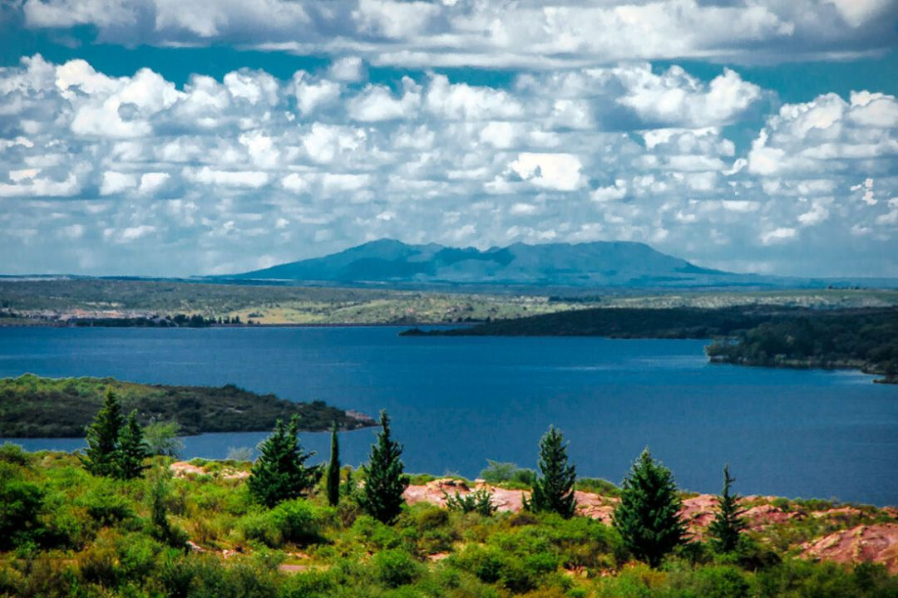

San Luis
La Carolina

un pueblo que mira a las bondadosas sierras de San Luis, y que recibió el reconocimiento "Best Tourism Villages” de la Organización Mundial del Turismo (OMT) a los pueblos turísticos más lindos del mundo..
Villa de Merlo
Merlo, San Luis, es un destino ideal para disfrutar durante la primavera, cuando el clima templado resalta la belleza natural de la región. Esta época es perfecta para explorar sus encantos, desde su famoso microclima hasta la rica fauna y cultura local.
San Luis
San Luis, capital de la provincia argentina del mismo nombre, es una ciudad tranquila rodeada de sierras, conocida por su arquitectura colonial, plazas verdes y cercanía a paisajes naturales como el Dique La Florida y el Parque Nacional Sierra de las Quijadas.
Nogoli
Un paraiso terrenal de aguas claras La localidad posee una ruta por fincas de olivos, río, cerros y dique, que la transforman en un escenario de belleza y serenidad para sus visitantes.
Potrero de los Funes
Es uno de los más aclamados destinos turísticos de la provincia, está ubicado en un encantador valle a 960 msnm, rodeado por cerros que forman parte de las últimas estribaciones de las Sierras de San Luis. Conquista con su sereno espejo de agua, que es el dique más antiguo de la provincia.
La Florida
Ideal para hacer deportes náuticos, windsurf, stand up paddle, laser, es el unico lago de la provincia permitido para vehiculos acuaticos motorizados. Es un lindo paisaje para descansar y pasear tanto en auto como caminando.